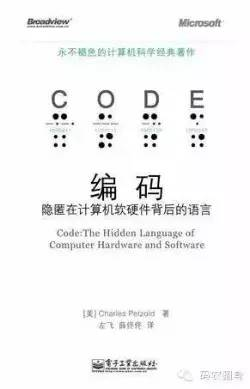
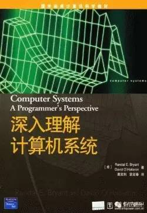
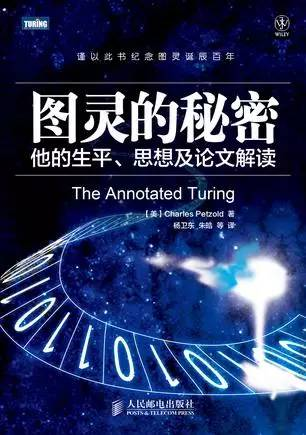
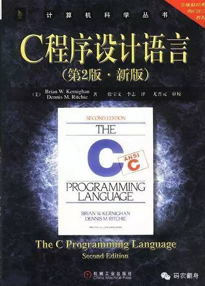
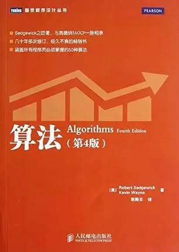
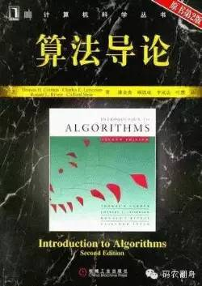
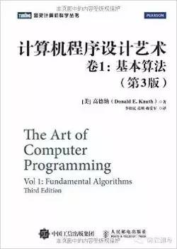
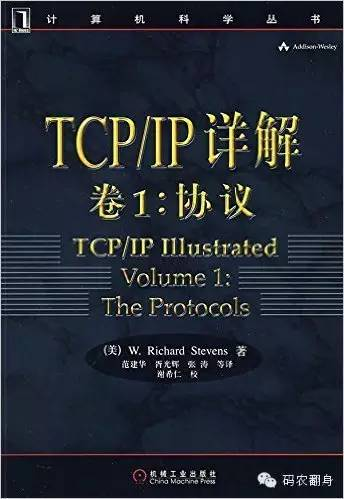
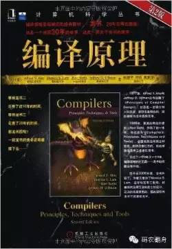
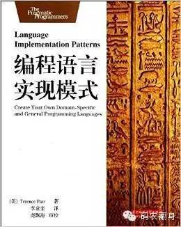

来自：码农翻身（微信号：coderising）
作者：IBM刘欣
已获转载授权
我会先让我的学生先去读一下《编码：隐匿在计算机软硬件背后的语言》这本书， 搞明白一个个简单的逻辑门电路到底是怎么组成计算机的， 弄清楚计算机软件语言和硬件之间到底是怎么关联起来的，然后再去上计算机组成原理，模拟电路，数字电路等专业课， 你会发现境界不同了，你会开启“上帝视角”进行俯视， 只需要通过这些专业课程补全知识的细节就可以了。

看完了《编码》， 我会推荐我的学生再深入一步， 看一看《深入理解计算机系统》，它把操作系统，计算机组成原理，数字电路，编译原理，网络，计算机体系结构等程序员需要了解的核心知识汇集在一起， 让你迅速的打下扎实的基础。

如果还有学生想再延伸一下， 看看《图灵的秘密》吧， 了解下计算机的数学原理，图灵机的构造和应用。

我会让我的学生去扔掉谭浩强的C语言的书 ， 去好好看看K&R 合著的《C程序设计语言》， K&R 指的是两个人， 其中R 就是Dennis M.Ritchie -- C 语言发明人 ， 所以应该看看下了C语言这个金蛋的“母鸡”所写的书。 这本书简洁，平实，如果你看不懂， 我劝你还是离开计算机专业， 去找个更有前途的方向吧 :-)

假如我是数据结构老师， 我会让我的学生首选Sedgewick 和 Wayne合著《算法》这本书学习数据结构和算法， 这是一本极为优秀的入门书， 有大量的图来展示算法， 比严蔚敏的《数据结构》好太多了， 我上大学的时候怎么没人告诉我呢？ 学过了这本书以后，不仅掌握了数据结构的只是，还有一个极好的福利，那就是会对Java这门语言有个基本的了解，为将来学习Java这门应用广泛， 就业能力强的语言打下基础。

我当然会要求我的学生把书中的习题都做一遍， 这样在以后的编程工作中，只要不是设计算法， 基本上就不会碰到什么问题了。
有余力的学生可以再看一下《算法导论》，学霸们可以研究下高纳德的《计算机程序设计艺术》。
|  |  |
假如我是操作系统老师， 我会推荐我的学生读一下《30天自制操作系统》， 亲自动手体会一下操作系统的制作， 把书本知识都用起来。 另外Linux 0.0.1的源码也是必读的， 尤其是计算机加电以后，怎么把操作系统给Boot起来的。
我会推荐我的学生看一下《TCP/IP详解》，尤其是将来想做通信和网络的同学， 几乎是必备。 可惜中文版翻译的比较烂， 中英文对照看吧 。

嗯，这门课挺难的， 在实际项目中直接使用不是很多，但是一定要了解原理， 最著名的书就是龙书《编译原理》了。 对于那些一门心思想发明个自己语言的同学，一定要去看看《编程语言实现模式》， 它会教你写真正实用的解析器、翻译器、解释器等语言应用。
|  |  |
写了这么多， 悲哀的发现，没有一本是国内写的教材.......
还有， 我也不是计算机系老师
●本文编号1492，以后想阅读这篇文章直接输入1492即可。
●本文分类“书籍”、“入门”，搜索分类名可以获得相关文章。
●输入m可以获取到全部文章目录发人员。
算法与数据结构↓↓↓
程序员的那点事↓↓↓
![]()